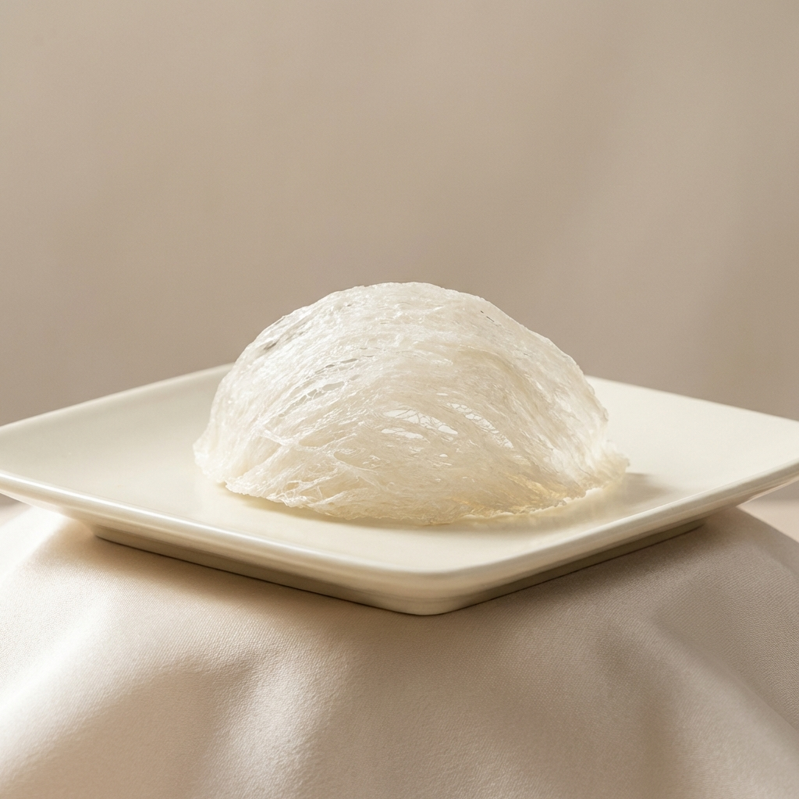

Trang chủ / Blog / Yến tinh chế làm thủ công
Yến tinh chế làm thủ công như thế nào?

Bài này viết lại từ bài đăng trên Fanpage Yến Sào Nhà Ry ngày 21/11/2026. Yến tinh chế nhà Ry làm từ yến thô ngon, làm thủ công, rửa bằng nước sạch. Yến ngâm ra nở thơm, có mùi tanh nhẹ, chưng lên ăn như yến tươi. Càng ăn càng khỏe, càng đẹp — đó là lời của shop, còn trải nghiệm thực tế thì mỗi người mỗi khác, quan trọng là yến phải thật và làm sạch đúng cách.
Yến tinh chế là gì?
Yến tinh chế là yến thô đã được làm sạch lông và tạp chất, rồi sấy khô lại thành tổ. Người mua về chỉ cần ngâm nở rồi chưng, không cần nhặt lông nữa. Vì vậy yến tinh chế hợp với người bận rộn, hoặc người mua làm quà biếu mà không muốn người nhận phải mất công làm sạch. Đọc thêm so sánh chi tiết trong bài yến thô hay yến tinh chế: nên mua loại nào.
Quy trình làm thủ công của nhà Ry
1. Chọn yến thô ngon làm nguyên liệu
Yến tinh chế ngon hay không bắt đầu từ yến thô đầu vào. Nhà Ry chọn yến thô già, sợi dài, ít lông để làm tinh chế, vì sợi yến thô ngon thì sau khi làm sạch vẫn giữ được thớ sợi, ngâm nở đều, chưng lên không bị nát.
2. Nhặt lông và làm sạch bằng tay
Từng tổ yến được ngâm mềm rồi nhặt lông bằng nhíp, làm thủ công, không làm vội. Cách làm này chậm hơn làm máy, nhưng giữ được sợi yến nguyên vẹn, không bị vụn. Sau khi nhặt lông, yến được rửa lại bằng nước sạch, không dùng chất bảo quản.
3. Sấy khô và đóng hộp
Yến sau khi làm sạch được sấy khô và đóng hộp. Nhà Ry có hộp quà biếu tặng cho khách mua làm quà — bạn nào cần cứ nhắn shop. Khi nhận yến tinh chế, bạn kiểm tra tổ yến khô ráo, sợi rõ, màu trắng ngà tự nhiên rồi mới nhận hàng.
Yến tinh chế ngâm nở và chưng ra sao?
Yến tinh chế làm từ yến thô ngon, ngâm trong nước sạch sẽ nở đều, sợi thơm, có mùi tanh nhẹ đặc trưng — mùi này là dấu hiệu của yến thật, không phải mùi hóa chất. Chưng lên, sợi yến mềm mà vẫn giữ độ dai nhẹ, ăn như yến tươi. Đọc hướng dẫn chi tiết trong bài cách chưng yến đúng cách.
Yến tinh chế giá bao nhiêu?
Yến tinh chế nhà Ry giá từ 2.900.000đ/100gr, tặng táo đỏ và đường phèn, có hộp quà biếu tặng. Giá ghi rõ theo 100gr cho dễ so sánh. Xem bảng giá đầy đủ của cả 3 loại trong bài giá yến sào 2026. Lười chưng thì có yến chưng sẵn: từ 55.000đ/hũ 75ml, mỗi hũ tới 8g yến tươi.
Câu hỏi thường gặp
Yến tinh chế làm thủ công khác gì yến làm máy?
Làm thủ công là nhặt lông bằng tay từng tổ, rửa bằng nước sạch, giữ được sợi yến nguyên vẹn hơn, nhưng làm chậm hơn.
Yến tinh chế ngâm nở ra sao?
Ngâm nở đều, sợi thơm, có mùi tanh nhẹ, chưng lên mềm mà vẫn giữ độ dai, ăn như yến tươi.
Yến tinh chế giá bao nhiêu?
Từ 2.900.000đ/100gr, tặng táo đỏ và đường phèn.
Cần tư vấn? Nhắn Zalo 0986.39.22.00
Nhắn Zalo để được tư vấn cách chọn yến tinh chế và kiểm hàng khi nhận.
Nhắn Zalo ngayĐịa chỉ: E20 đường 672, Phường Phước Long, TP Hồ Chí Minh
Hotline/Zalo: 0986.39.22.00 — Facebook: Yến Sào Nhà Ry